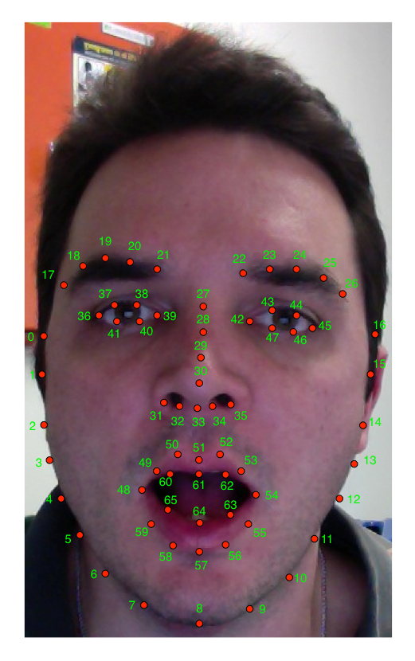

CSIRO Face Analysis SDK
This document introduces the face analysis software development kit developed by the Commonwealth Scientific and Industrial Research Organisation. This software contains a number of useful automatic methods that extract and utilise the geometry of the face found in video or still images.
Table of Contents
1 Introduction
The CSIRO Face Analysis SDK contains a number of useful components that can extract and utilise the geometry of the face found in video. The SDK includes a real time non-rigid face tracker and an expression transfer module that can animate an avatar using the expression of a user.
The software development kit (SDK) consists of a collection of command line programs that cater for the common use cases and an application programming interface (API) to accommodate third party applications.
2 Components
2.1 Non-rigid Face Registration
The current implementation fits a deformable 3D model to pixels using an improved version of the Deformable Model Fitting by Regularized Landmark Mean-Shift algorithm. This algorithm returns 66 2D image landmarks, their corresponding position in 3D as well as the pose of the head for each successful detection. The implementation also includes a failure detection component in order to improve robustness.
2.2 Expression Transfer
The expression transfer component is capable of transferring the shape and appearance of an individual to an avatar. The algorithm performs this transfer using a semantic mapping in order to preserve the geometric identity of the avatar. This strategy resulted in more visually appealing animations when compared with animations produced using a direct geometric transfer i.e. the avatar's shape is identical to that of the user.
The only information required to initialise the semantic mapping is a sample of the user displaying a netural expression. This sample can be easily obtained at run-time using the non-rigid face tracker component.
3 Building and Installation
The SDK requires the following software to be installed in order to build and execute:
- OpenCV version 2.4 or above (See OpenCV build options for recommended settings).
- CMake version 2.8 or above.
- FFMPEG version 1.0.0 or above.
- Bash
- Qt version 4.7 or above (only required if building the GUI)
Building the software requires some familiarity with the Unix command line. Instructions for Microsoft platforms will be provided in a future release of the SDK.
The first step to building the SDK is to download the source code from the CI2CV website. The source code is provided as an archive and can be extracted using the following command
tar zxvf csiro-face-analysis-sdk.tar.gz
The build process for the SDK requires knowing the paths to certain libraries, programs and header files. Discovering this information is performed by CMake using the following commands.
cd csiro-face-analysis-sdk mkdir build cd build cmake [options] ..
The SDK includes a demonstration program of the face tracker and
expression transfer components. This program is not built by default
as it is not a critical component of the SDK and it avoids having to
install the Qt GUI framework. If you wish to build this component, you
must specify the option -DWITH_GUI when invoking cmake above.
The default values used by the SDK should be sufficient for most
systems, however, if you experience difficulties then there are a
number of [options] to cmake that aid the configuration
process. Valid [options] are
-DOpenCV_PREFIX=/opencv/prefix- Installation prefix for OpenCV.
-DFFMPEG=/path/to/ffmpeg- The path to the ffmpeg executable.
-DBASH=/path/to/bash- The path to bash. (Important on systems
where
/bin/shis not BASH. e.g. FreeBSD)
When CMake has successfully configured the project, issue make.
make
Once the build is completed, all command line programs are stored in
the build/bin/ directory and all shared libraries are stored in the
build/lib/ directory. The command line programs are executable from
within the build directory. There is no need to perform make install!
The directory in which the executables are built can be added to your search path with the following command (BASH only)
export PATH=$PATH:/prefix/csiro-face-analysis-sdk/build/bin/
4 Programs
4.1 Non-Rigid Face Registration
This section outlines the non-rigid face registration program
face-fit. This program can perform fitting on a single image, a
sequence of images or video.
An important detail of the fitting algorithm is that it relies on a frontal face detector to initialize the non-rigid fitting component. Once initialized, it falls back to the frontal face detector only when the fitting algorithm has failed to accurately perform non-rigid registration.
The following command executes the fitting algorithm on a single image and visualises the results.
face-fit <image>
The resulting landmarks can be saved to file by specifying an output pathname as a command line argument.
face-fit <image> <output-landmarks>
The next command performs tracking over a sequence of images.
face-fit --lists <image-lists> [landmarks-list]
The argument <image-lists> is a file containing a list of image
pathnames with each pathname separated by a new line. The argument
[landmarks-list] is a list of pathnames to save the landmarks to. If
landmarks-list is not specified, then the fitting results are
displayed on the screen. Users should be aware that only successful
registrations are saved to file.
The --video switch enables face-fit to perform fitting on a video.
face-fit --video <video> [landmarks-template-string]
The argument <video> is the pathname to the video. If
[landmarks-template-string] is not specified, then the tracking is
displayed to the screen. If [landmarks-template-string] is
specified, then it is used as the template (or format) argument to
sprintf(3) in order to synthesise a landmark pathname based on the
frame number.
For example, the following command will write a landmarks file at
frames/frame000001.pts for frame one of video,
frames/frame000002.pts for frame 2, and so on for each frame in
video.
face-fit --video video frames/frame%06.pts
Like the other modes, landmarks are only written if tracking was successful.
More functionality of the face-fit algorithm can be obtained from
its usage text.
$ face-fit --help
4.2 Expression Transfer
This section illustrates the expression-transfer program which is a
front end to the SDK's expression transfer API.
The command line arguments accepted by the expression-transfer
program are
expression-transfer [options] \ <calibration-image> <calibration-landmarks> \ <image-argument> <landmarks-argument> <output-argument>
The arguments <calibration-image> and <calibration-landmarks>
represent the data needed to calibrate the semantic mapping between
the individual and the chosen avatar. The calibration data must be an
exemplar of the individual displaying a neutral expression.
The arguments <image-argument> and <landmarks-argument> represent
the expression to be transferred to the avatar and the argument
<output-argument> specifies where to save the rendered avatar. How
this information is interpreted changes depending on the mode of the
expression-transfer program.
The default mode is to synthesize a single image of an avatar and save it to file.
expression-transfer calibration.png calibration.pts \
input.png input.pts output.png
If you specify the switch --lists, the arguments <image-argument>,
<landmarks-argument> and <output-argument> now correspond to lists
of pathnames.
The avatar used in the above examples is the default avatar delivered
with the SDK. Other avatars can be selected using the options
--index and --model.
expression-transfer [--model <model-pathname>] [--index <index>] ...
Viewing or choosing an avatar for the expression-transfer program
can be performed using the program display-avatar.
display-avatar [model-pathname]
If [model-pathname] is not specified, then the default model
pathname is used.
You can change avatars by pressing the a and d characters
keyboard. The left and right arrow keys can be used as well. When the
avatar changes, a number will be printed to the console. This number
can be used as the argument to the --index option for the
expression-transfer program.
4.3 Creating New Avatars
The program create-avatar-model is used to create a new model file
that can be used by the Face Analysis SDK.
create-avatar-model [options] <output-model-pathname> \
<avatar-image> <avatar-annotation> [eyes-annotation]
The argument <output-model-pathname> is the location of the new
avatar model containing the avatar defined by the arguments
<avatar-image>, <avatar-annotation> and [eyes annotation].
The following diagram displays the landmarks that should be stored in
the <avatar-annotation> pathname using the points file format.

The [eyes annotation] argument provides the ability to draw the eyes
of the avatar with the same gaze as the user. This pathname should
contain the following annotations using the points file format.

It is safe to not specify the [eyes-annotation] argument for cases
where the avatars are wearing glasses.
The create-avatar-model program provides a --list switch to allow
the creation of an model file containing more than one avatar. In
--list mode, the arguments <avatar-image>, <avatar-annotation>
and [eyes-annotation] are files containing lists of pathnames.
4.4 Demonstration Program
A GUI application, called demo-application is included with the
software which demonstrates the tracker and expression transfer
components simultaneously.

The camera used can be changed using the --camera-index command line
option
demo-application --camera-index <index>
where the argument <index> selects the camera to use. The order of
the cameras is determined by OpenCV and the first camera has an index
of 0.
On OSX, a drag and drop installer for the application can be built by
issuing the following in the <build> directory.
cpack -G DragNDrop -DWITH_GUI=yes -DCPACK_BUNDLE_NAME=DemoApplication
The above command can only be executed after the SDK has been built.
5 Application Programming Interface
This section outlines how to integrate the CSIRO SDK in to third party applications.
5.1 Non-Rigid Face Registration
The non-rigid registration algorithm can be used in third party C++
applications by including the FACETRACKER namespace.
#include <tracker/FaceTracker.hpp>
The tracking interface is provided by the abstract base class
FaceTracker. Instantiating a new instance of this class is performed
by the LoadFaceTracker function
FaceTracker *LoadFaceTracker();
This function returns NULL if the face tracker cannot be loaded.
Alongside the FaceTracker instance are its parameters. Face tracker
parameters are represented by the opaque data type FaceTrackerParams
of which a new instance can be obtained with the function
LoadFaceTrackerParams.
FaceTrackerParams *LoadFaceTrackerParams();
This function returns NULL if the tracker parameters cannot be loaded.
The methods implemented by the FaceTracker class are as follows
typedef std::vector<cv::Point_<double> > PointVector; class FaceTracker { public: virtual int NewFrame(const cv::Mat_<uint8_t> &image, FaceTrackerParams *params) = 0; virtual PointVector getShape() const = 0; virtual void Reset() = 0; };
The method NewFrame performs tracking on a grayscale image using
the tracking parameters params. Its return value is an integer value
between 0 and 10 (inclusive) or one of the constants
FaceTracker::TRACKER_FAILED- The tracker has failed to accurately perform registration.
FaceTracker::TRACKER_FACE_OUT_OF_FRAME- The tracker has failed as the face is partially outside the image frame.
A value between 0 and 10 represents the health of the tracker. A
value of 10 indicates that the quality of the tracking is very good,
and a value of 0 indicates that the tracking quality is poor.
When the tracking quality is poor or the tracker has failed, an
application must reset the tracker using the Reset method.
5.2 Expression Transfer
The expression transfer algorithm can be used in C++ applications by
including the AVATAR namespace.
#include "avatar/Avatar.hpp"
The interface used to perform expression transfer is provided by the
class Avatar.
typedef cv::Mat_<cv::Vec<uint8_t,3> > BGRImage; typedef std::vector<cv::Point_<double> > PointVector; class Avatar { public: // Expression Transfer virtual void Initialise(const BGRImage &im, const PointVector &shape, void* params=NULL)=0; virtual int Animate(BGRImage &draw, const BGRImage &image, const PointVector &shape, void* params=NULL)=0; // Selecting the avatar. virtual int numberOfAvatars() = 0; virtual void setAvatar(int index) = 0; };
An instance of the Avatar class can be created with the function
LoadAvatar().
Avatar *LoadAvatar(); Avatar *LoadAvatar(const char *avatar_collection_pathname);
The method Animate renders an avatar displaying the expression found
in image with the corresponding shape. The resulting rendering is
stored in the matrix draw.
Prior to calling Animate, an avatar must have been chosen using
setAvatar. With the avatar chosen, the Avatar instance must be
initialised using Initialise. Initialisation requires an image and
shape corresponding to the netural expression of the individual that
is being used to animate the avatar. This procedure must be followed
every time the avatar is changed.
5.3 Points
The utils/points.hpp header contains two functions for reading and
writing point files.
typedef const std::vector<cv::Point_<double> > PointVector; PointVector load_points(const char *pathname); void save_points(const char *pathname, const PointVector &points);
A std::runtime_exception is thrown if either function is unable to
perform its task.
5.4 Including and Linking
The compiler options required to use the code outlined in this section are the following
<source>/srcadded to the include path.<build>/srcadded to the include path.- Linking against the libraries
utilities,clmTrackerandavatarAnimin the<build>/libdirectory. - Compiler and linker requirements for the OpenCV modules
core,highgui,imgprocandobjdetect.
6 File Formats
6.1 Points
The programs used in this library make extensive use of point files or
landmark files. These files commonly have the extension .pts. The
format of this file is intended to be very simple.
This is an example of a points file:
n_points: 2
{
1 2
5.5 2.2
}
The first line of a points file contains the number of points N in
the file. The region between the braces { and } contains the N
points with each point starting on a new line. The text for the point
is simply two floating point numbers.
7 Utilities
This section outlines a number of utility programs which are bundled with the software.
7.1 Mapping lists
The command line programs in this SDK follow this basic argument structure
command [options] <configuration-1> .. <configuration-K> \ <input-pathname-1> .. <input-pathname-M> \ [output-pathname-1] .. [output-pathname-N]
The reason for this is that this structure makes it very convenient to
operate with lists of data when coupled with the map-list program.
Lets assume that the file a.list contains a list of numbers
1 2 3 4
and the file b.list contains a list of strings
do not pass go
then the command map-list 2 a.list b.list echo will produce the
following output
1 do 2 not 3 pass 4 go
The usage string for map-list is
map-list [options] <N> <list-1> .. <list-N> <command> [command arguments ... ]
The argument <N> specifies how many lists are specified on the
command line. The <N> lists must immediately follow. The argument
<command> represents the command to be executed, and [command arguments] will appear on the command line before the items obtained
from the lists.
Another example using the above data is
$ map-list 2 a.list b.list printf 'file-%02d-%s.txt\n' file-01-do.txt file-02-not.txt file-03-pass.txt file-04-go.txt
If one of the list arguments is the text -, then the list is read
from the standard input rather than being read from file. It is safe
to use - multiple times. This indicates that the list read from
standard input is used more than once.
7.2 Pathnames
Complementing the map-list program is change-pathnames. Its
purpose is to take a list of pathnames and create a new list with the
pathnames changed to have either a different directory, extension or
both.
For example, the file input.list contains the following list of pathnames
frame-01.png frame-02.png frame-03.png frame-04.png
Executing the following change-pathnames command on input.list
change-pathnames input.list output.list --directory points/ --type pts
produces the file output.list
points/frame-01.pts points/frame-02.pts points/frame-03.pts points/frame-04.pts
If the input list for change-pathnames is the character -, then
the list of pathnames is read from the standard input. If the output
list is the character -, then the transformed list is written to
standard output.
7.3 Video
A number of utilities are included in the SDK that perform common operations on video. These utilities are
remove-rotation-metadatarotate-movieextract-frames-from-moviecreate-movie-from-frames
The program remove-rotation-metadata is required to overcome an
issue with OpenCV where its cv::VideoCapture class does not honour the
rotation parameter embedded in some video containers. This problem
typically occurs when working with video obtained using a portable
device. The program remove-rotation-metadata creates a new movie
without the rotation parameter.
It may be required to rotate the video once the rotation metadata is
removed. This task can be performed using the command rotate-movie.
The program extract-frames-from-movie converts a movie to a sequence
of images and create-movie-from-frames uses a sequence of images to
create a movie.
All of the above programs simply invoke FFMPEG with the required
options and arguments.
8 OpenCV Build Options
It is strongly recommended that the following options are used when building OpenCV
cmake -DCMAKE_BUILD_TYPE=Release \ -DENABLE_AVX=ON \ -DENABLE_FAST_MATH=ON \ -DENABLE_SSE=ON \ -DENABLE_SSE2=ON \ -DENABLE_SSE3=ON \ -DENABLE_SSE41=ON \ -DENABLE_SSE42=ON \ -DENABLE_SSSE3=ON \ /path/to/opencv/
Please ensure that your CPU supports the specified instructions before enabling them otherwise the compiler will produce binaries that cannot be executed.